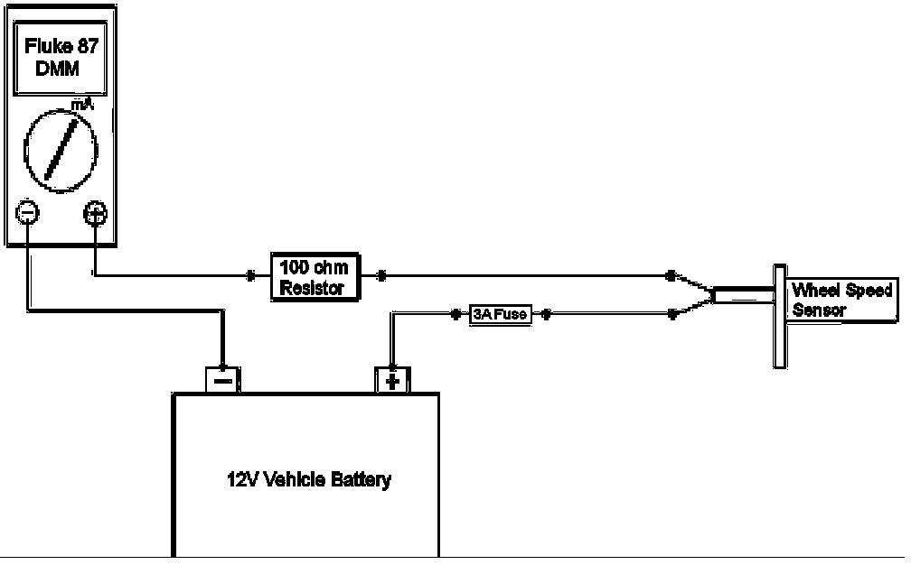

Important Information
Additional Wheel Speed Sensor Diagnostics - keywords ABS brake C0035 C0040 C0045 C0050 C0245 DTC lamp light message MIL P0609 service system unwant
Subject: Additional Wheel Speed Sensor Diagnostics
Models: 2008-2010 Buick Enclave
2007-2010 Cadillac Escalade, EXT, ESV
2009-2010 Cadillac XLR
2007-2010 Chevrolet Avalanches, Silverado 1500, Suburban 1500, Tahoe
2010 Chevrolet Camaro
2009-2010 Chevrolet Corvette, Traverse
2007-2010 GMC Acadia, Sierra 1500, Yukon, Yukon Denali, Yukon XL 1500, Yukon Denali XL
2007-2010 Saturn Outlook
The following diagnosis might be helpful if the vehicle exhibits the symptom(s) described in this PI.
Condition/Concern:
When diagnosing a wheel speed sensor concern it may be found that the "12 volt Wheel Speed Sensor Supply Voltage" circuit from the EBCM has no voltage. This may incorrectly lead to the replacement of the EBCM because there is no voltage to the WSS. When the EBCM has a fault with a WSS, it internally turns off the supply voltage to the WSS.
Recommendation/Instructions:
Below are some additional diagnostic tips to help diagnose WSS concerns after the SI2000 "Circuit Testing" has been performed:
Note: This test should only be performed after the SI2000 "Circuit/System Testing" is complete; and prior to an EBCM replacement.
1. To test for the "12 volt Wheel Speed Sensor Supply Voltage" from the EBCM with a WSS fault present, perform the following test:
- A. Disconnect the Tech 2 and Key Off Ignition, Remove Key, Open and Close the drivers door to turn off RAP (Retained Accessory Power) and wait at least 60 seconds.
- B. Disconnect the appropriate WSS harness connector.
- C. Connect a Fluke 87 DVOM (J39200) across the wheel speed sensor "Supply Voltage" and "Signal" circuits from the EBCM.
- D. Set the DVOM on DC volts, press the "range" button to the 40 or 60 volt scale and then press the Min/Max button.
- E. Turn the ignition key on. There will be a quick momentary 12 volt pulse from the EBCM at key up. This 12 volt pulse is sent each time the EBCM is powered up after being asleep to check the WSS circuit integrity.
- F. If the 12 volt pulse is present continue with the WSS component testing. If the 12 volt pulse is NOT present recheck the circuits between the EBCM and WSS before replacing the EBCM. Make sure there are no backed out or loose terminals at the EBCM, WSS, or any inline connectors using the appropriate Terminal Test Probe
2. Component Testing of the Wheel Speed Sensor
Note: This procedure is very polarity sensitive and if the WSS is connected in reverse polarity while performing the below procedure the WSS can be permanently damage. Please make sure the B+ is connected to the WSS Supply Voltage and the ground (Fluke 87 DVOM) to the WSS Low Signal Return. Use the appropriate SI wiring diagrams to determine the WSS Supply Voltage and WSS Low Signal Return.
- A. Ignition OFF, disconnect the harness connector at the suspect wheel speed sensor.
- B. Connect a 3A fused jumper wire between Battery B+ and the "12 volt High Wheel Speed Sensor Supply Voltage" terminal.
- C. Connect a resistor of approximately 100 ohms in series with a Fluke 87 DVOM (J-39200) between the Battery Ground and the "Wheel Speed Sensor Low Signal Return" terminal. (Sources of a 100 ohm resistor: High Speed GM Lan terminating resistor, certain test lights, Radio Shack, etc.). Shown below is an example of how to properly connect your meter for testing.
- D. Set the DVOM to the DC Milliamp scale.
- E. The typical reading will be 4 to 8 mA for the "Low" reading and 11 to 16 mA for the "High" reading. As the wheel is turned very slow, a few degrees at a time, the signal will change from the low to the high reading as each reluctor tooth passes the WSS.
- F. If not within the specified range, replace the wheel speed sensor.

Please follow this diagnostic or repair process thoroughly and complete each step. If the condition exhibited is resolved without completing every step, the remaining steps do not need to be performed.